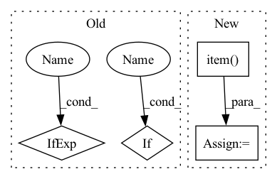

Pattern ID :23082
Before Change
correct = 0
total = 0
for batch_idx, (inputs, targets) in enumerate(testloader):
if use_cuda :
inputs, targets = inputs.cuda(), targets.cuda()
inputs, targets = Variable(inputs, volatile=True), Variable(targets)
outputs = net(inputs)
loss = criterion(outputs, targets)
test_loss += loss.data[0]
_, predicted = torch.max(outputs.data, 1)
total += targets.size(0)
correct += predicted.eq(targets.data).cpu().sum()
progress_bar(batch_idx, len(testloader), "Loss: %.3f | Acc: %.3f%% (%d/%d)"
% (test_loss/(batch_idx+1), 100.*correct/total, correct, total))
// Save checkpoint.
acc = 100.*correct/total
if acc > best_acc:
print("Saving..")
state = {
"net": net.module if use_cuda else net,
"acc": acc,
"epoch": epoch,
}After Change
outputs = net(inputs)
loss = criterion(outputs, targets)
test_loss += loss.item()
_, predicted = outputs.max(1)
total += targets.size(0)
correct += predicted.eq(targets).sum().item()
In pattern: SUPERPATTERN
Frequency: 3
Non-data size: 4
Instances Fragment ID: 73057035
Project Name: johnsk95/pt4al
Commit Name: 7f162085eca07b86fb00afec8fc62b5fee836b7b
Time: 2018-04-25
Author: kuang.liu@hotmail.com
File Name: main.py
M Class Name: AnonimousClass
N Class Name: AnonimousClass
M Method Name: test(1)
N Method Name: test(1)
M Parent Class:
N Parent Class:
M File Name: main.py
N File Name: main.py
M Start Line: 111
M End Line: 134
N Start Line: 108
N End Line: 129
Before Change
for batch_idx, data in enumerate(loop):
data = data.to(device) // [b, T, h, w], with T = in_length + pred_length
input = data[:, :video_in_length]
targets = data if concat_input_for_loss else data[:, video_in_length:]
predictions = pred_model.pred_n(input, pred_length=video_pred_length)
if concat_input_for_loss:
predictions = torch.cat([input, predictions], dim=1)
val_total_loss.append(loss_fn(predictions, targets).item())
pred_model.train()After Change
for (name, use_full_input, _, loss_fn) in losses:
pred = predictions_full if use_full_input else predictions
real = targets_full if use_full_input else targets
loss = loss_fn(pred, real).item()
total_losses[name].append(loss)
pred_model.train()
Fragment ID: 73057033
Project Name: ais-bonn/vp-suite
Commit Name: 7b2115f43c7b9b0ecf644451be9befcb6de23f7b
Time: 2021-07-21
Author: boltres@ais.uni-bonn.de
File Name: utils.py
M Class Name: AnonimousClass
N Class Name: AnonimousClass
M Method Name: validate_video_model(6)
N Method Name: validate_video_model(7)
M Parent Class:
N Parent Class:
M File Name: utils.py
N File Name: utils.py
M Start Line: 229
M End Line: 246
N Start Line: 211
N End Line: 234
Before Change
correct = 0
total = 0
for batch_idx, (inputs, targets) in enumerate(testloader):
if use_cuda:
inputs, targets = inputs.cuda(), targets.cuda()
inputs, targets = Variable(inputs, volatile=True), Variable(targets)
outputs = net(inputs)
loss = criterion(outputs, targets)
test_loss += loss.data[0]
_, predicted = torch.max(outputs.data, 1)
total += targets.size(0)
correct += predicted.eq(targets.data).cpu().sum()
progress_bar(batch_idx, len(testloader), "Loss: %.3f | Acc: %.3f%% (%d/%d)"
% (test_loss/(batch_idx+1), 100.*correct/total, correct, total))
// Save checkpoint.
acc = 100.*correct/total
if acc > best_acc:
print("Saving..")
state = {
"net": net.module if use_cuda else net,
"acc": acc,
"epoch": epoch,
}After Change
outputs = net(inputs)
loss = criterion(outputs, targets)
test_loss += loss.item()
_, predicted = outputs.max(1)
total += targets.size(0)
correct += predicted.eq(targets).sum().item()
Fragment ID: 73057036
Project Name: alvinwan/neural-backed-decision-trees
Commit Name: 7f162085eca07b86fb00afec8fc62b5fee836b7b
Time: 2018-04-25
Author: kuang.liu@hotmail.com
File Name: main.py
M Class Name: AnonimousClass
N Class Name: AnonimousClass
M Method Name: test(1)
N Method Name: test(1)
M Parent Class:
N Parent Class:
M File Name: main.py
N File Name: main.py
M Start Line: 111
M End Line: 134
N Start Line: 108
N End Line: 129